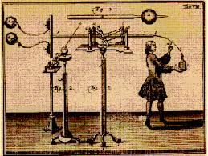
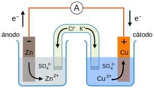
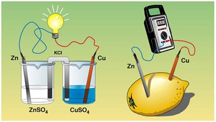
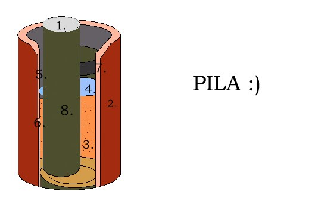

Es difícil conocer el nacimiento de la electroquímica, pues existen evidencias que indican, la existencia de baterías y acumuladores de energía eléctrica, desde la antigüedad. Estudios realizados en los años 1930 demostraron la existencia de baterías en el imperio Parto, que probablemente fueron empleadas para la electrodeposición o galvanizado de piezas metálicas. Es entonces que, durante finales del siglo XVIII (Ilustración), el anatomista y médico italiano Luigi Galvani marcó el nacimiento de la electroquímica de forma científica al descubrir el fenómeno que ocurría, al pasar electricidad por las ancas de rana y nuevamente al tocar ambos extremos de los nervios empleando el mismo escalpelo descargado. Dichas observaciones las publicó en su ensayo "De Viribus Electricitatis in Motu Musculari Commentarius" (del Latín por, Comentario acerca del efecto de la electricidad en el movimiento muscular). Es de esta forma que en 1791 propuso la existencia de una sustancia "nervio-electrica" existente en toda forma de vida. Galvani pensó que esta nueva fuerza vital, era una nueva forma de generación de electricidad natural, además de las ya conocidas por el hombre como la existente en los truenos y relámpagos o en algunos animales como la anguila eléctrica o las rayas eléctricas.
Es una rama de la química que estudia la transformación entre la energía eléctrica y la energía química. En otras palabras, las reacciones químicas que se dan en la interface de un conductor eléctrico (llamado electrodo, que puede ser un metal o un semiconductor) y un conductor iónico (el electrolito) pudiendo ser una disolución y en algunos casos especiales, un sólido. Si una reacción química es conducida mediante un voltaje aplicado externamente, se hace referencia a una electrólisis, en cambio, si el voltaje o caída de potencial eléctrico, es creado como consecuencia de la reacción química , se conoce como un "acumulador de energía eléctrica", también llamado batería o celda galvánica. Las reacciones químicas donde se produce una transferencia de electrones entre moléculas se conocen como reacciones redox, y su importancia en la electroquímica es vital, pues mediante este tipo de reacciones se llevan a cabo los procesos que generan electricidad o en caso contrario, es producido como consecuencia de ella. 
La electroquímica es una parte importante de la química, incluida en la mayoría de los temarios de diversas ciencias experimentales. Las reacciones químicas con transferencia de electrones aparecen en numerosas situaciones de la vida cotidiana y constituyen un aspecto muy importante en las reacciones biológica. La Electroquímica Aplicada es el empleo de los procesos electroquímicos en cualquier tipo de aplicación industrial tal como síntesis de productos farmacéuticos, nanotecnologías, tratamiento de residuos, recuperación de metales pesados, deposiciones metálicas, etc. 
Una de las aplicaciones más importantes de la electroquímica es el aprovechamiento de la energía producida en las reacciones químicas mediante su utilización como energía eléctrica, proceso que se lleva a cabo en las baterías. Dentro de estas se encuentran las pilas primarias y los acumuladores o pilas secundarias. 